Overlap is a sampling policy.
Camera zero anchors the default 35% shared-surface proposal target, with 0.25–3 m baselines. Camera paths stay within the primary room and undergo geometric clearance checks.
A data engine for multi-view reconstruction. Generate furnished interiors, place calibrated cameras, animate people, and export images with aligned geometry and labels.
Switch cameras, time and annotation. Drag the reveal control to compare against the RGB image from exactly the same capture.
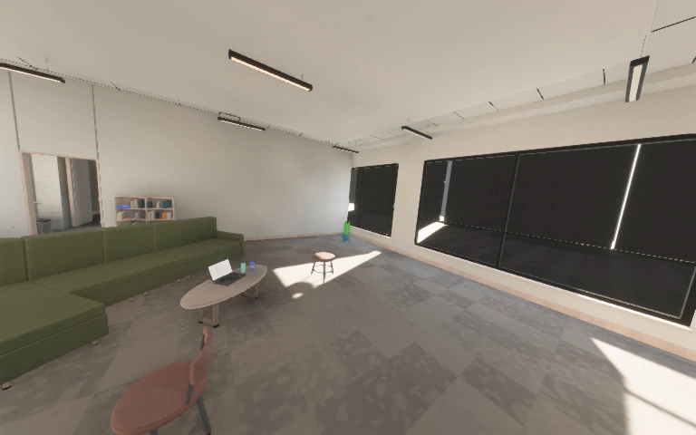
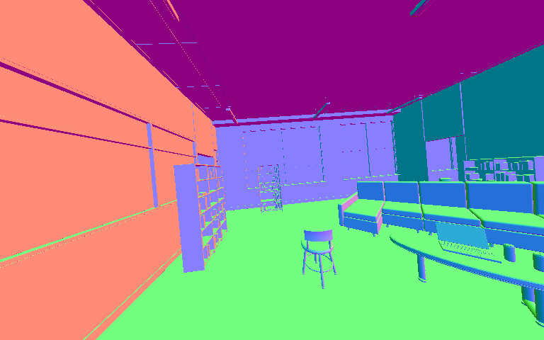
RGBNormalsView-space unit normals encoded as RGB = (n + 1) / 2. Colors describe surface direction, not material.
These two rooms are selected illustrations, not a population sample. Color, depth and label files share scene/camera/time identities. Glass is a first geometric surface for annotations; labels do not follow refracted or reflected light. Website images are visualizations; the downloadable NPZ visibility masks retain exact integer membership.
Camera zero anchors the default 35% shared-surface proposal target, with 0.25–3 m baselines. Camera paths stay within the primary room and undergo geometric clearance checks.
Co-visibility projects each surface into the other capture cameras and checks occlusion. Each camera owns one bit in a lossless 16-bit membership mask; the source camera excludes itself.
Export RGB, float32 geometric channels, class labels, temporal correspondence, calibration, instance boxes and person joints. O-Voxel covers primary-room geometry in static, single-timestep captures.
Optional ARDY text and waypoint conditioning drives AnnyBody people. Static actors remain supported; motion models initialize only when a configuration requests them.
“A person scratches the head with the left hand smoothly.”
“A person marches steadily, stops and nods the head once, marches again, stops and taps the right heel once, then resumes marching.”
Paths are planned after furnishing, with clearance and motion-admission checks. Capture waits for the scene, pipelines and requested motion to become ready. All views then sample the same normalized trajectory time.
This is an illustrative model output, not a motion-quality benchmark. Contact, hair, cloth and motion naturalness remain approximate. Each video frame is a native render, played at the model’s generated rate.
Motion configuration and validation ↗The whitepaper evaluates generator v18 on consecutive seeds, without replacing failed or unattractive samples. These measurements are separate from the v19 gallery above.
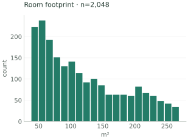
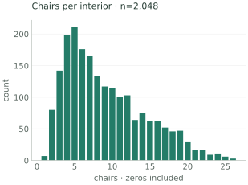
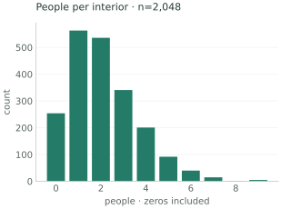
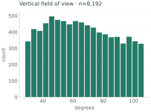
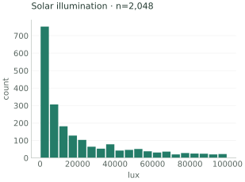
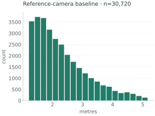
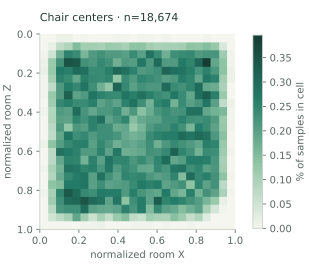
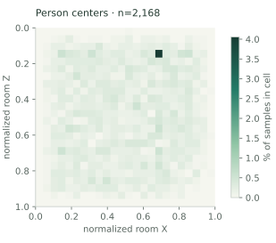
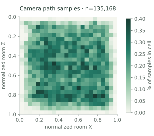
Frozen SigLIP2 base embeddings, averaged once per room. 34 dimensions explain 90% of scene-centroid variance. Median cross-room nearest cosine distance: 0.0628.
64 rooms / 256 images. Nearest-neighbor search excludes the same room. Embedding distance is a redundancy diagnostic, not a measure of photographic realism or learning utility.
192 reference-camera edges across 64 rooms. Minimum room-wise overlap: 34.4%. Three edges fell below the 35% proposal target and remain in the report.
Rendered depth reprojection uses a declared tolerance. A proposal constraint does not guarantee a pixel-level overlap bound.
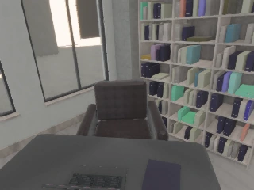
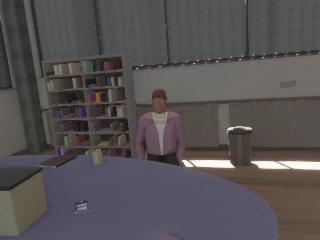
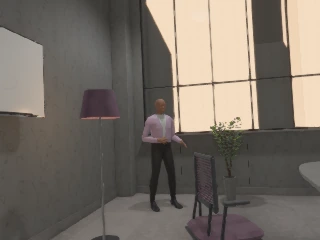
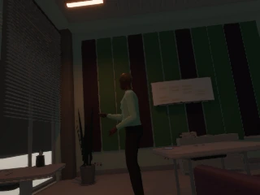
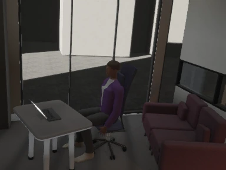
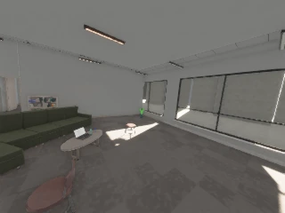
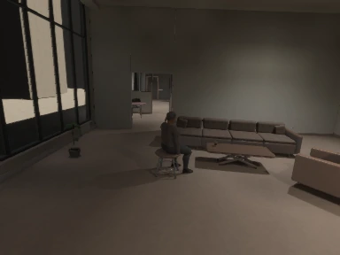
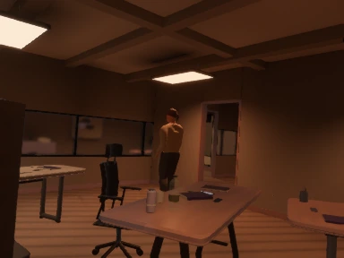
| Workload | Views / second | Room median | Room p95 |
|---|---|---|---|
| RGB | 4.32 | 0.773 s | 1.776 s |
| RGB + depth + normal + position + semantic | 3.58 | 0.892 s | 2.642 s |
RTX PRO 6000 Blackwell · Vulkan 610.43.02 · optimized development build. Four 320 × 240 views per room; 40 rooms, first eight excluded as warmup; static people. Includes construction, lighting, rendering and readback. Excludes encoding, disk export and neural motion inference. These finite runs do not establish unlimited-process memory stability.
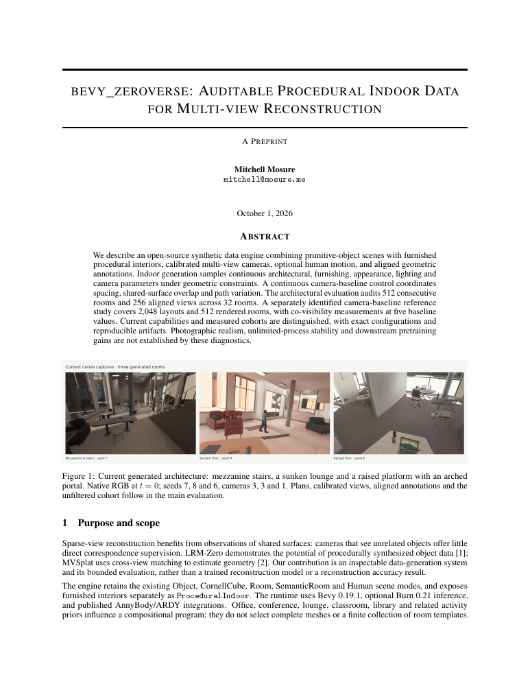
The paper describes continuous scene programs, material and geometry construction, calibrated multi-view capture, annotations, optional motion, diversity diagnostics and completed-capture performance.
It reports a bounded generator evaluation. Photographic realism, ten-million-sample learning utility and downstream reconstruction gains remain open evaluation questions.
Compiled from this repository’s TeX paper. Population measurements are v18; the v19 addendum and matched gallery describe subsequent capabilities. No publication venue or peer-review status is implied.
One seeded room, four cameras, RGB and matched geometry. Human motion is optional; this command does not initialize motion models.
Also available: primitive-object scenes, Cornell cube, legacy room and semantic-room scenes, and standalone humans. The native CLI writes datasets; the WebGPU app is an interactive viewer.
cargo run -p bevy_zeroverse_burn --bin zeroverse_gen -- \
--scene-type procedural-indoor --seed 24005 \
--samples 1 --workers 1 --cameras 4 \
--width 768 --height 480 \
--render-modes color depth normal semantic co-visibility \
--ov-mode disabled --output-mode fs \
--output out/shared_views --no-ui@misc{mosure2026zeroverse,
title = {bevy_zeroverse: Auditable Procedural Indoor Data
for Multi-view Reconstruction},
author = {Mitchell Mosure},
year = {2026},
note = {Technical report; generator evaluation},
url = {https://mosure.github.io/bevy_zeroverse/project/}
}